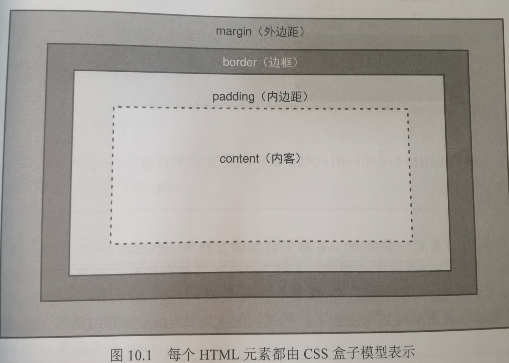
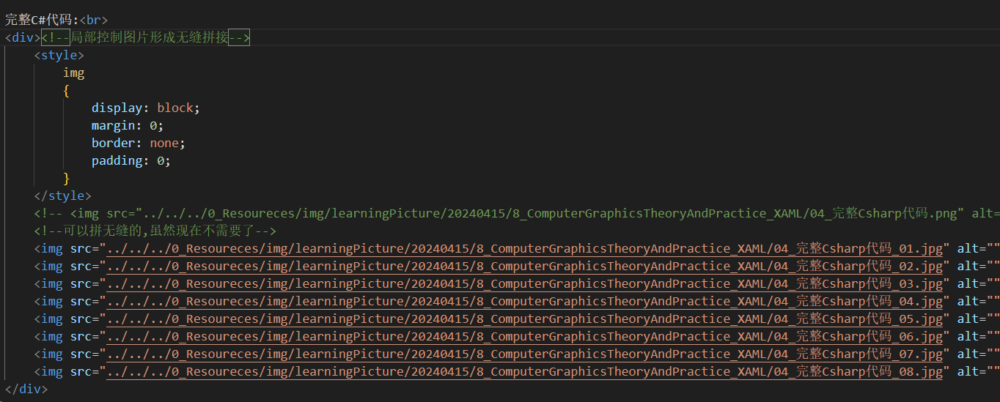
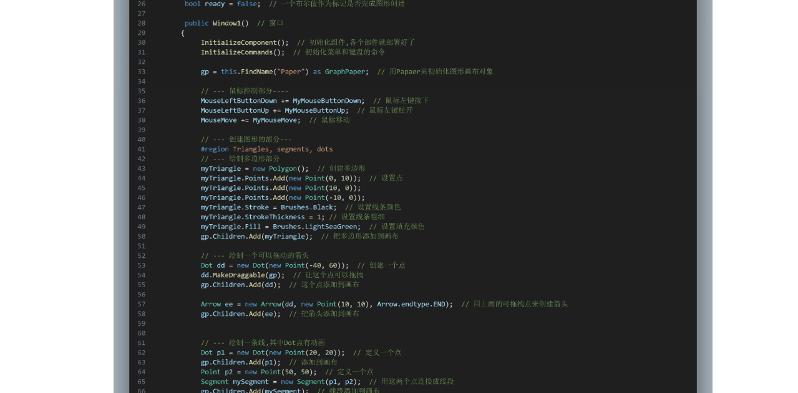
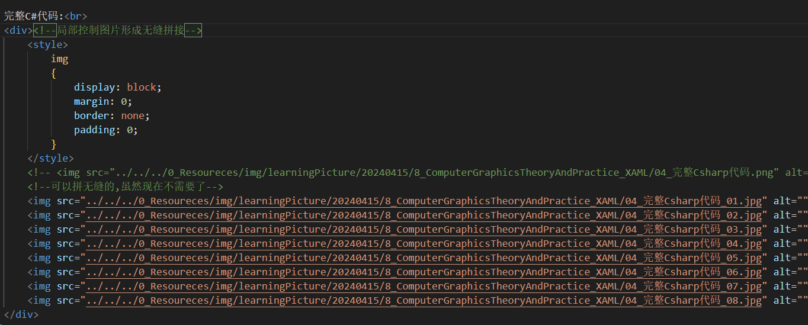
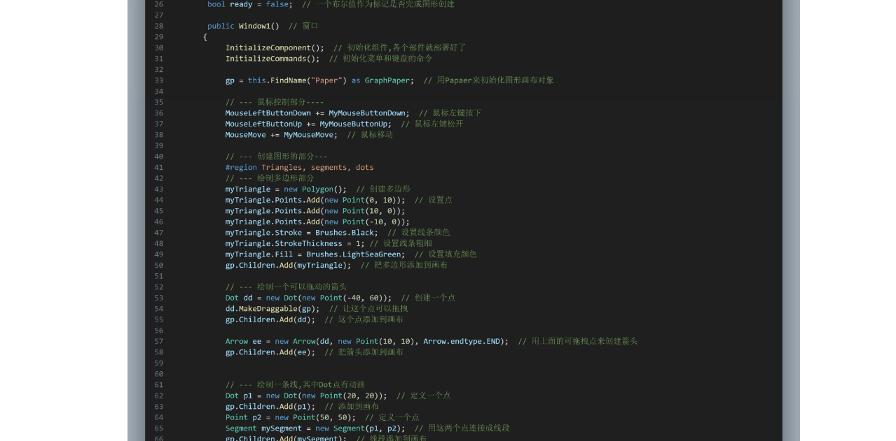

9.使用外边距,内边距,对齐和浮动
9.1外边距margin

margin属性设置的元素周围的外边距
可选属性:top right bottom left
也可以直接跟数字
1个值设置全部外边距
2个值设置上下和左右外边距
3个值上外边距,左右外边距,下外边距
4个值按照上,右,下,左的顺时针方向设置外边距
margin属性设置的元素周围的外边距
可选属性:top right bottom left
也可以直接跟数字
1个值设置全部外边距
2个值设置上下和左右外边距
3个值上外边距,左右外边距,下外边距
4个值按照上,右,下,左的顺时针方向设置外边距
9.2内边距
padding指定内边距,设置属性和margin一样.
9.3保持对齐
水平对齐:text-align
属性:left,right,center,justify
垂直对齐:vertical-align
属性:top,middle,bottom,text-top,baseline,text-bottom
属性:left,right,center,justify
垂直对齐:vertical-align
属性:top,middle,bottom,text-top,baseline,text-bottom
9.4内容块居中
方法1
设置margin-left:auto,margin-right:auto;这样就左右都自动对齐了
方法2
margin:0 auto;这样把上下外边距设置为0,左右外边距设置为自动
设置margin-left:auto,margin-right:auto;这样就左右都自动对齐了
方法2
margin:0 auto;这样把上下外边距设置为0,左右外边距设置为自动
9.5理解float属性
float浮动:元素只会左右浮动
属性:left,right
clear限制元素浮动
属性:left,right,both,none,inherit
属性:left,right
clear限制元素浮动
属性:left,right,both,none,inherit
无缝拼图
1.使用PS切块大图像

2.使用嵌入样式表实现无缝拼贴

3.结果

2.使用嵌入样式表实现无缝拼贴

3.结果
